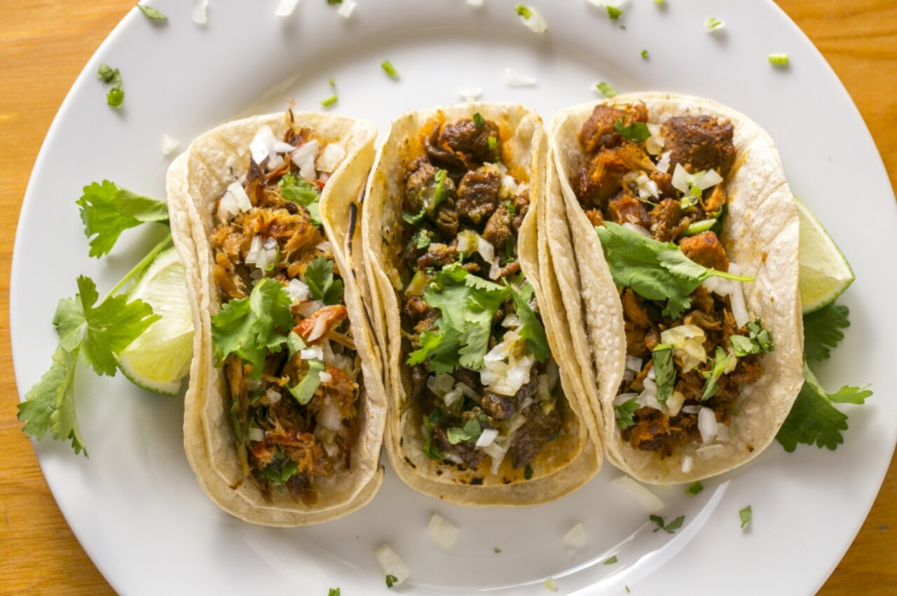

Double Warm Corn Tortillas
We griddle two heirloom yellow corn tortillas together until lightly blistered and pliable. The double layer prevents soggy breaks, locking in hot juices, braised carnitas, and rich salsas.
While our taco names bring a smile to your face, what goes into each tortilla is governed by uncompromising culinary discipline. From citrus-and-garlic marinated flank steaks seared over blazing planchas to pork carnitas braised slowly until fork-tender, we cook everything from scratch daily.

Every bite is layered with heat, acidity, smoke, and fresh aromatic herbs.
We griddle two heirloom yellow corn tortillas together until lightly blistered and pliable. The double layer prevents soggy breaks, locking in hot juices, braised carnitas, and rich salsas.
For our 'Fat Guy in a Little Coat', pork shoulder is rubbed with Mexican oregano, cumin, and sea salt, then slow-braised for six hours in fresh orange and lime juices with cinnamon sticks until deeply caramelized.
We never touch canned salsas. Tomatillos, chiles de árbol, and Roma tomatoes are blistered over open flames before being blended with cilantro, raw garlic, and lime into vibrant table salsas.